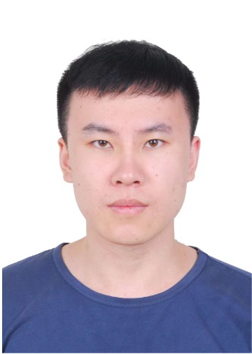

|
Jindong Han
|
 |
I am currently a Ph.D. student (since Fall 2021) at the Academy of Interdisciplinary Studies, Hong Kong University of Science and Technology (HKUST), advised by Prof. Hao Liu and Prof. Hui Xiong. My general research areas include data science and artificial intelligence, with a particular focus on spatio-temporal modeling, physical-world simulation, and scientific machine learning. The goal of my research is to develop cutting-edge AI models that can understand and model the dynamic, ever-evolving world, with applications spanning all scales, from individual activities to smart cities, and further to the global Earth system.
E-mail: jhanao@connect.ust.hk
|
Research Interest
My current research interests lie primarily in machine learning for large-scale spatio-temporal data, relevant topics include:
Spatio-Temporal Data Mining (Spatio-Temporal Foundation Models, Urban Computing Applications, etc)
AI for Science/Earth Science (AI4Climate, Scientific Machine Learning, etc)
Recent News
03/2025: One paper on spatio-temporal forecasting was accepted by VLDB 2025.
01/2025: One paper on instruction data selection was accepted by WWW 2025.
12/2024: I successfully passed my PhD defense. Thanks to my advisors and all committee members for their invaluable support and guidance!
12/2024: One paper on graph unlearning was accepted by AAAI 2025.
11/2024: One paper on graph transfer learning was accepted by KDD 2025.
Selected Honors and Awards
First Prize of AIS Best Research Award, HKUST, 2024
Best Research Paper Nomination, VLDB 2024
First Place, KDD Cup 2018
|